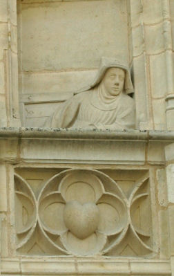
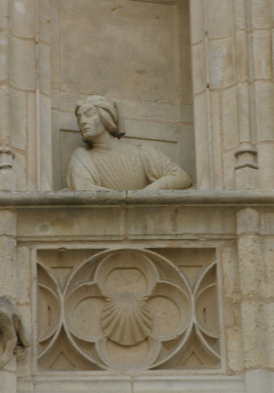
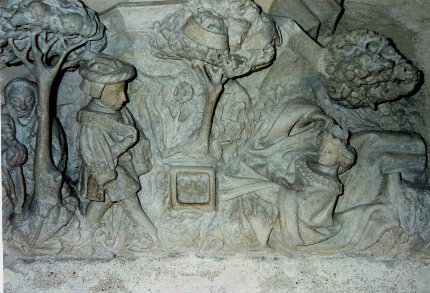
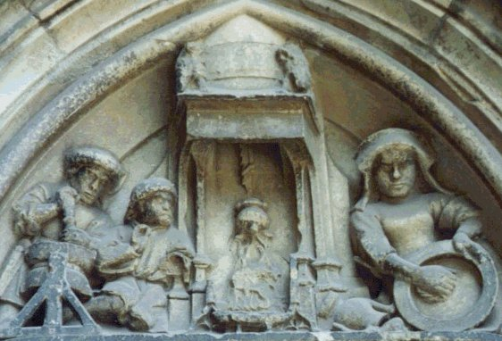

Emblema XI.
revu le 8 novembre 2004
Dealbate Latonam & rumpite libros.
(Blanchissez Latone et déchirez vos livres1.)
De Latone on connaît les rejetons jumeaux,
Enfants de Jupiter, selon l’antique fable
D’autres la disent faite de soleil et de lune
Mêlés : elle a des taches noires sur sa face.
Donc, à blanchir Latone apprête-toi ; détruis
Ces livres ambigus qui ne font que te nuire2.
La diversité des auteurs dans leurs écrits est telle que les chercheurs de la vérité concernant le but de l’art désespèrent presque de la découvrir. En effet si les discours allégoriques sont en eux-mêmes difficiles à saisir et causes d’erreurs nombreuses, ils le deviennent tout particulièrement là où les mêmes termes sont appliqués à des réalités diverses, et des termes différents aux mêmes réalités. Si l’on veut y trouver une issue, il faut posséder un génie divin pour apercevoir la vérité qui se cache sous de telles ténèbres, ou déployer un travail et des dépenses infinis pour discerner ce qui est vrai de ce qui ne l’est pas. Les philosophes affirment que l’un ne va pas sans l’autre, qu’un esprit pénétrant ne suffit pas sans le travail manuel et inversement, si bien que la théorie et la pratique ne doivent pas être séparées. Nul en effet n’est doué d’une intelligence assez clairvoyante pour éviter cent mille fois les détours, les erreurs, les méprises sur les mots, les fausses directions aux carrefours, les ambiguïtés, et pour se tenir dans le sentier véritable de la nature. C’est pourquoi les philosophes disent :
" Qui n’a pas encore erré n’a pas encore commencé, et les erreurs sont les maîtres qui enseignent ce que l’on doit faire ou non."
Ils répètent encore qu’un homme pourrait passer toute sa vie à distiller et à redistiller, dut-il vivre mille ans, avant de parvenir à la vérité par la seule Expérimentation. Qu’il y ait peu de profit en dehors de l’étude et de la lecture des auteurs, le Réformateur des insensés le donne à entendre lorsqu’il dit :
" L’étude dissipe l’ignorance et ramène l’esprit humain à la véritable connaissance et à la science de toutes choses. Il est donc avant tout nécessaire d’acquérir la science en étudiant cette œuvre pleine de douceur, et d’aiguiser son esprit au moyen des paroles physiques, car c’est en elles que réside la connaissance de la vérité. Si donc les hommes laborieux ne méprisent pas l’étude, ils goûteront la suavité du fruit qui en résulte. Mais ceux qui auront répugné à étudier et auront cependant voulu travailler, qu’ils voient si leur art est l’imitation de la nature, alors qu’ils prétendent corriger celle-ci. Il est impossible que de tels hommes mènent à son terme parfait la préparation des secrets des philosophes. Les sages disent d’eux qu’ils passent à la pratique comme l’âne se dirige vers le foin, ne sachant vers quoi il tend le museau, si ce n’est dans la mesure où il amène les sens extérieurs privés d’intelligence vers la pâture, sous la seule conduite de la vue et du goût. "
Telles sont ses paroles3.
Mais les philosophes ont voulu éviter que l’on ne dépérisse par l’excès de l’étude, mer inépuisable et d’une profondeur immense, et que l’on ne tente (en vain) de mettre en action tout précepte littéral, même s’il concorde avec beaucoup d’autres, et qu’on ne consume et ne fasse décliner par là ses forces, la durée de son corps, sa réputation, ses biens et ses richesses. Dans ce but ils disent en langage emblématique qu’on doit blanchir Latone et déchirer ses livres pour ne pas déchirer son cœur. La plupart des livres sont en effet écrits d’une façon si obscure qu’ils ne sont compris que de leurs seuls auteurs. Plus d’un fut laissé pour égarer les hommes par envie, ou plutôt pour les retarder dans leur course, de manière qu’ils n’atteignent pas sans difficulté le but, ou encore pour obscurcir ce qui fut écrit avant eux. Qu’est-ce donc que blanchir Latone ? Le rechercher, voilà l’ouvrage, voilà le travail4. Latone, selon ce qu’affirme le traité " Le Son de la Trompette ", " est un corps parfait composé du soleil et de la lune "5. Les poètes et les très anciens écrivains déclarent que Latone est la mère du Soleil et de la Lune, c’est-à-dire d’Apollon et de Diane ; d’autres disent qu’elle est leur nourrice. Diane selon eux naquit la première (la Lune en effet et la Blancheur apparaissent d’abord) et fit ensuite office de sage-femme le même jour pour la venue au monde de son frère Apollon6. Latone est l’un des douze dieux hiéroglyphiques des Egyptiens. Ceux-ci répandirent ces allégories, ainsi que d’autres, parmi les autres peuples. Mais seuls des prêtres égyptiens en très petit nombre en possédaient l’intelligence et la signification exactes ; le reste des hommes appliquait les récits de ce genre à des sujets qui n’existent pas dans la nature, à savoir des dieux et des déesses divers. C’est pourquoi Latone possédait dans ce pays après Vulcain un temple très somptueux, recouvert et orné d’or, comme étant la mère de l'Apollon des Philosophes et de Diane.
Cette Latone est sombre et noirâtre, elle porte sur son visage des taches qui doivent être enlevées par un procédé qui est le blanchissement. Certains opèrent leurs blanchissements au moyen de céruse, de mercure sublimé, de talc réduit en huile et d’autres produits semblables7 ; ils enduisent la peau, la couvrent et la blanchissent ainsi. Mais ces enduits destinés à blanchir tombent sous l’effet d’un souffle d’air ou du moindre liquide, car ils ne pénètrent pas à l’intérieur. Les philosophes dédaignent de tels fards que l’on utilise davantage pour tromper les yeux que pour teindre la substance intérieure du corps8. Ils veulent en effet que le visage de Latone soit blanchi d’une façon pénétrante, et que la peau elle-même soit changée d’une façon réelle et non à l’aide d’un fard. Mais on pourrait demander comment l’on y parvient. Je réponds qu’il faut d’abord rechercher et identifier Latone ; bien qu’elle soit extraite d’un endroit méprisable9, elle doit être élevée à une place plus digne, puis engloutie en un lieu bien plus vil, qui est le fumier10. Car là elle blanchira et deviendra plomb blanc. Lorsqu’on a obtenu celui-ci, il n’y a plus à douter du succès final, c’est-à-dire du plomb rouge qui est le principe et la fin de l’œuvre11.
Notes1. Cette devise est célèbre. Basile Valentin l'a déjà employée à propos du « laiton ». Le laiton vulgaire est un composé de cuivre et de zinc qui possède la couleur de l’or. Bien sûr, dans le cas présent, il s'agit du laiton « philosophique », c'est-à-dire d'un amalgame [sans présence de mercure vulgaire ou vif-argent] qui se produit lors de la préparation du Mercure philosophique. Basile écrit : « Dealbate Latonam Et Rumpire Libros ». Or, le texte indique « rumpite » qui correspond à une erreur. L'original - voir infra Arnaldi di Villa Nova - indique d'ailleurs « apponite » qui est évidemment exact [cf. vignette originale dans section Gardes du corps, figure XVI -]. Artéphius emploie la même expression. Il est curieux que l'on voit à chaque fois la phrase traduite avec le mot livre [liber] dont l'autre acception, écorce, conviendrait beaucoup plus :
« rompez ou rejetez l'écorce » ;
c'est du reste ce que préconise de faire Philalèthe :
" Laisse la coquille et prends le noyau, purge-le à trois reprises par le feu et le sel, ce qui se fera aisément si Saturne a regardé sa propre beauté dans le Miroir de Mars. " [Introïtus, VII]
Il ne semble pas, toutefois, qu'il s'agisse de la traduction exacte dans la mesure où ce n'est pas libros qu'il faut lire mais liberos. On trouve ceci dans l'Epistola super alchimia ad Regem Neapolitanum, attribué à Arnauld de Villeneuve :« Dealbate latonem, id est terram, & apponite liberos, ne corda vestra rumpantur. » [in Bibliotheca Chemica curiosa, t. I, p. 685]
qui signifie : « blanchissez Latone, qui est la terre, et libérez (ses) enfants, de peur que vos coeurs se rompent. » Dans cette opération, l'auteur recommande donc de ne pas « brûler les fleurs », c'est-à-dire de ne pas laisser le sulphur partir littéralement en fumée.


FIGURE I
(façade du Palais Jacques-Coeur à Bourges - la coquille à droite et le noyau à gauche - clichés Alain Mauranne)Cette phrase du Philalèthe est décidément inestimable : que signifie-t-elle au juste ? Cache-t-elle un procédé tenant à la technique du laboratoire ou à un trait spirituel tenant à l'oratoire ? En tout cas, elle est fort belle et ne déparerait pas un texte d'André Breton ou de René Char. Elle frappe par sa modernité. Rappelons que Philalèthe doit sans doute beaucoup à Jean d'Espagnet [Oeuvre secret d'Hermès, Philosophie naturelle Restituée]. Saturne est avant tout Cronos et a des rapports avec le Mercure. Arès [Mars] voile sans doute l'acide vitriolique ou un composé du vitriol. Il ne faut pas oublier que Vénus est liée d'une certaine manière à Saturne dans les textes hermétiques. Dire que Saturne a vu sa « beauté », c'est donc parler à mots couverts de Vénus-Aphrodite...N'oublions pas que Saturne était à l'origine le Dieu des Semailles et des Grains, parfois même de la Vigne [analogie avec Bacchus]. Du reste, Saturne est représenté avec la faucille du moisonneur et la serpette du vigneron. N'est-ce pas là désigner aussi Vénus, consacrée au mois d'avril par les Romains, époque où se manifeste dans toute la nature le renouveau de l'amour ? La différence que nous trouvons entre Vénus et Saturne tient simplement au temps. Saturne annonce, là où Vénus produit. D'où, peut-être, la référence au miroir.
2. On mesure la complexité de l'arcane. Nous en avons déjà parlé. Comment comprendre et ou placer cette partie de l'oeuvre où l'on évoque la naissance de Diane et d'Apollon, c'est-à-dire de la Lune et du Soleil ? Il faut, à notre avis, comprendre que cette phase de l'oeuvre se situe tout au début de la Grande coction, lorsque les éléments ont été introduits sous forme pulvérulente. Mais voilà ce que dit un mythographe de Latone [nous avons conservé l'orthographe originale] :On voit quelquefois les figures d'Anubis & d'Isis accompagnées d'une tortue, ou d'un canard, ou d'un lézard amphibie. Le propre de ces animaux est de se mettre à portée de la terre et de l'eau qui leur font également néceffaires , & de fe loger fur un terrain plus élevé à mefure que l'eau monte. Un lézard de cette efpéce placé dans la main d'Ifis , ou une figure moitié femme et moitié lézard, avertiffoit du tems où il falloit gagner lesLe tableau lapidaire de la figure II a fait l'objet d'un commentaire de la part de Fulcanelli dans son Mystère des Cathédrales ; il l'interprète comme le mythe de Tristan de Léonois, à gauche et d'Iseut à droite. Au centre, la pierre cubique équarrie par le feu secret. Dans l'arbre, on devine la tête de Marc, roi de Cornouailles [Mercurius senex], qui a élevé Tristan [Apollon] et qui l'envoie en Irlande demander pour lui la amin d'Iseut la Blonde [Diane]. Le philtre d'amour n'est autre que le Mercure philosophique. Le reste de la légende, et notamment la couleur des voiles du navire rappelle évidemment la légende de Thésée et d'Egée.
terrains élevés , & faire provision d'olives , de figues féches, de farine, de grain rôti, et d'autres nourritures de garde pour fubfifter pendant la longue durée du débordement. J'ai d'abord foupçonné que c'étoit-là le fymbole que portoit l'Ifis Egyptienne aux approches de l'inondation, & qu'on lui donnoit alors le nom de Leto (a) , ou Latone qui
eft le nom du lézard amphibie. Mon foupçon s'eft changé en une efpéce de certitude , lorfque j'ai trouvé dans les monumens de l'antiquité cette Ifis ayant la tête & les épaules d'une femme, avec les pattes , le corps , & la queue d'un léto, ou d'un lézard.
Quand l'eau du Nil fe retiroit affèz tôt de deffus les plaines pour les laiffèr libres un mois avant l'entrée du foleil au fagittaire, le laboureur Egyptien étoit fur de pouvoir a loifir reconnoître par l'arpentage les limites de ses champs, et de femer avant l'hyver fans avoir aucun fujet d'inquiétude jufqu'à la moiffon. C'étoit maîtrifer le Nil. C'étoit remporter une victoire complette fur l'ennemi. On exprimoit cette particularité fi flateufe pour l'Egypte par un Horus armé de fléches, et remportant la victoire fur le monftre Python. Horus alors s'appelloit indifféremment Horus le laboureur , ou Hores
le conquerant, le deftructeur. Ifis prénoit de fon côté le nom de Diane l'abondance , & l'on mettoit en fa main la figure d'une caille, dont le nom fignifie auffi falut, fécurité. On ne pouvoit peindre la fécurité, mais on montroit un objet donc le nom en réveilloit la penfée. Ces figures portées par quelques voyageurs dans l'île de Délos, donnèrent apparemment naiffance à la fable de Latone.
On imagina qu'un ennemi cruel la pourfuivoit , et l'environnoit des eaux de l'Océan , qu'heureufement elle avoit apperçu le terrain de la petite île de Délos plus élevé que l'eau; qu'elle s'y étoit fauvée, y avoir vécu d'olives, de dattes, & de quelques fruits qu'elle y avoit trouvés, qu'elle y avoit mis au monde Horus & Deio ; qu'Horus s'étoit armé de fléches, & avoit tué Ob , ou Phyton (De peur qu'on ne doutât de la vérité de ces faits, on montrait à Délos l'olivier et le palmier, qui avaient nourri Latone ; et l'on donnait au petit fleuve, qui arrose une partie de l'île, le nom d'Itop, ou de retraite du Dragon ou serpent Pyton) ; que pour cette raifon il avoit été nommé Apollon {c'est la même chose qu'Hores} , le conquérant ; qu'enfin Latone avoit été changée en ortyx, c'eft-à-dire
en caille , & avoit donné le nom d'Ortygie à l'île qui lui avoir procuré une retraite.Mais ces figures & ces noms portés par des Phéniciens dans les Cyclades, n'étoient point tellement liés à l'île de Délos, qu'on ne trouvât la même chofe ailleurs. Les Ephéfiens avoient auffi chez eux l'olivier & le palmier mêmes qui avoient foulagé Latone dans fes peines. Il avoient un lieu nomme Ortygie, et ils foutinrent le plus férieufement du monde devant Tibère , qu'ils rcvendiquoient, titres en main, la naiffance d'Apollon & de Diane que les habitans de Délos leur prétendoient enlever.
Nous avons déjà vu les idées, ou les figures des Egyptiens prendre en Crète, en Béotie, en Afrique, en Phrygie, et ailleurs, des formes toutes nouvelles, et s'y convertir en autant d'hiftoires, particulières à chacun de ces lieux. Ifis et Horus portés dans l'île de Délos, et en lonie, donnèrent lieu a la naiffance d'Apollon et de Diane dans cette île , et à Ephèfe. La victoire d'Horus, ou du laboureur fur le monftre ennemi, par lequel il étoit traverfé, donnoit occafion en Egypte à des réjouiffances raifonnables. On en continua la fête à Délos, et par route la Grèce, comme fi cette victoire eût été particulière au pays. On folemnifa partout la fête d'Apollon Pythien ; et je ne fçai fî on ne montroit pas quelque part la peau de l'horrible ferpent , le monument irréfragable du fervice qu'Apollon avoit rendu au genre humain en exterminant Python. Il ne falloit pas même tant de preuves pour mettre le peuple en mouvement. On chantoit : on danfoit : en donnoit des fpectacles dans les fêtes Pythiennes. C'en étoit affez pour les faire obferver religieufement.
Le monftre aquatique, le dragon à longs plis qui fut exterminé par Horus, avait auparavant maltraité & fait difparoître quelque tems Ofiris , qui enfin s'étoit remontré, & avoit pris le deffus. On confondit en Grèce Ofiris & Horus, et l'on n'y connut qu'une défaite de Python. Le démèlé d'Ofiris et de Python avoit rapport au déluge. Celui d'Ofiris
le jeune étoit particulier à l'Egypte. Mais toutes ces idées fe confondirent partout
et même en Egypte. On n'oublia pas à la vérité qu'Ofiris étoit le foleil : mais il en arriva qu'Apollon confondu avec Ofiris le premier vainqueur de Python , devint auffi le foleil, fans ceffer d'être le fils de Jupiter. Celui-ci, par une fuite neceffaire, eut un autre département. On lui laiffa le feptre et l'empire du ciel et de la terre. On affigna le char, le fouet, et les rênes à Apollon. De là vient qu'on retrouve fi communément dans un dieu les caractères d'un autre. L'Horus Apollon qui n'avoit rapport qu'à l'année ruftique, ou à l'ordre des travaux , fut d'autant plus facilement pris pour le foleil qui règle la nature, que l'on mettoit le fouet et les attributs du foleil dans les mains d'Horus, pour faire une abbréviation des marques de l'année folaire et des travaux convenables à la faifon. Horus devint ainfi même chofe que le Moloch des Ammonites, l'Adonis de Biblos, le Bel
des autres villes de Phénicie, et le Bélénus rayonnant qu'on honoroit dans les Gaules. Ce conducteur du char qui éclaire le monde, eft le fils de Jupiter : mais le fils de Jehov, le fils par excellence, liber, n'eft autre chofe qu'Horus, ou Bacchus, ou Dionyfus. Voilà donc Ofiris, Horus, Apollon, Bacchus, et le Soleil confondus. L'auteur des Saturnales l'a affez bien démontré. VirgiIe lui-même ne diftingue point Bacchus d'avec Apollon ou le Soleil, en donnant à Bacchus & à Cérès ou lfis, le gouvernement de l'année & de la lumière.
FIGURE II
(intérieur du Palais Jacques-Coeur à Bourges - Apollon et Diane idéalisés - cliché Alain Mauranne)
Notre mytographe donne à Latone les traits d'un animal amphibie, rapproché de la tortue ou du lézard amphibie. Le symbolisme de la tortue a été étudié dans d'autres sections. Rappelons que Cette tortue désigne l'antimoine saturnin d'Artéphius. Le mot écaille est riche de cabale. Par lepiV, il désigne une coque [bâteau Argos] ou une coquille, en proche assonance phonétique de lepaV, qui désigne la roche nue, le rocher. Il faut en rapprocher ce que dit Basile Valentin dans la sentence qui fait l'objet de ce chapitre XI : « Dealbate Latonam Et Rumpire Libros » ce que l'on traduit faussement par « blanchis le laiton et brûle tes livres », ce qui est une absurdité. Puisqu'il faut « rendre Diane toute nue et rompre l'écorce » ; c'est-à-dire qu'il faut passer le stade de la putréfaction [la tortue est assimilable au dragon couvert d'écaille qu'il faut « ouvrir » - liber = écorce vivante, livre constitué de plusieurs feuilles - mais nous venons de voir que Liber, c'est aussi le fils de Jupiter : Horus, Bacchus ou Dionysos.]. Mais lepiV s'apparente à leproV [écailleux, qui se lève par écailles, d'où : lépreux. L'étain n'est-il pas attaqué parfois sous forme d'oxyde que l'on appelle la lèpre de l'étain ?]. Cette évocation de la tortue appelle un dernier commentaire que nous emprunterons à une citation de Canseliet :« PREMIÈREMENT, si j'y considere la TORTUE, je trouveray d'abord, qu'elle peut este l'hieroglyphique d'un homme de speculation laborieuse et saturnienne, lequel par son pas de TORTUE a esté lentement et judicieusement à l'entour du Cercle de la revolution et vicissitude de plusieurs heures, ou courses circulaires du Soleil, ou d'ouvrages recommencez suivant l'exercice de son ART, dont la perfection depende du precepte tarda diligentia [par lente application], et d'un travail industrieux et tres-grande assiduité de corps et d'esprit attentif, et d'estre sans distraction enfermé dans sa Coquille, sur laquelle est pour cet egard le signe de Saturne. Et (suivant le precepte):
Interpone tuis interdum gaudia curis
Mêle parfois les plaisirs à tes travauxil est representé par cette Tortue, ayant mis sa teste ou esprit et pensée recluse, hors cette coquille, et du soin de toutes affaires domestiques, vouloir passer par le règne du Mercure, inventeur de la MUSIQUE, pour s'aller reposer quelque temps en passant a l'umbre de la GRAPPE. » [Traité de l'Eau de Vie ou anatomie théorique et pratique du Vin, divisé en trois livres. Composez autrefois par feu Me I. Brouaut Médecin. a Paris, chez Jacques de Senlecque, en l'Hostel de Bavières, proche la porte Saint Marcel, 1646]
en forme de variation sur le thème du Mercure, véritable « tardambulum », à l'image de Saturne-Cronos. Dans son dernier ouvrage, l'Alchimie expliquée sur ses Textes classiques, Canseliet cite le Cosmopolite à diverses reprises. En note de bas de page, il livre le titre complet de la Nouvelle Lumière chymique :
" Novum Lumen Chymicum, e Naturae fonte et manuali experientia depromptum, et in duodecim Tractatus divisum, ac jam primum in Germania editum. Cui accessit Dialogus, Mercurii, Alchymistae et Naturae, perquam utilis. Coloniae, apud antonium Boëtzerum. Anno M.DC.X "
et revient de façon assez détournée, il est vrai, sur le thème de la rosée de mai, dans le chapitre intitulé les Conditions extérieures :
" Nous comprenons évidemment, qu'il faut être dans la Nature, que le pré indique la couleur verte de l'esprit universel et que le jour serein est celui que donne le ciel, lorsqu'il est dégagé et qu'il montre sa voûte toute bleue ou remplie de scintillantes étoiles. " [l'Alchimie expliquée...p. 121]
Nous comprenons à présent mieux le sens exotérique du symbole complexe représenté par Latone, qui n'est autre que l'antimoine saturnin d'Artéphius. Si l'on veut voir le portrait hermétique de Latone, il nous semble que la meilleure version en est celle qui figure sur un caisson du château du Plessis-Bourré [Deux Logis Alchimiques]. Le chapitre consacré à la Jeune fille et la Tortue à la longue queue va nous permettre de revenir sur certains symboles déjà vus :
FIGURE III
(la Jeune Fille et la Tortue à longue, in Deux Logis Alchimiques)Dans ce caisson, plusieurs éléments attirent notre attention : la tortue, certes, mais non moins les longs cheveux emportés par un vent violent ou le fer à cheval que cette amazone tient de sa main gauche. Nous avons vu dans le chapitre IV que les cheveux [ou leur absence] avaient une importance hermétique certaine. Ainsi que le note E. Canseliet :
" Selon la Fable, la tortue était l'attribut ordinaire du dieu Mercure qui, l'ayant trouvée près d'un antre...la fit périr par le fer et grâce à la lyre -testudo- confectionnée de sa carapace..."
et Canseliet ajoute plus loin :
"...l'image du Plessis, qui nous montre que la lente et terrestre tortue est devenue marine ; que le chaos primaire s'est changé en Saturne des Sages..."
Et le Saturne des Sages désigne aussi l'antimonium d'Artéphius. Notons enfin que les livres ambigus désignent l'homme double igné, dans ce contexte. Ambigu, en effet, se dit en latin anceps, qui a deux têtes, épithète de Janus.
3. Cette longue digression, ces paraphrases n'ont d'autre but que de nous donner des indications sur le Mercure philosophique.
4. Blanchir Latone, c'est imposer le feu vulgaire au Mixte dont nous avons parlé à la note 2. Il faut prendre garde que des paroles précises ont été mêlées au texte abscons de Maier. Il faut réfléchir, en particulier à : « il faut déchirer les livres, au lieu de déchirer le coeur ». Pour cela, relisez ce que dit Limojon de Saint Didier au sujet de la terre des feuilles :« Vous voyés par là le merite de cette precieuse liqueur, à laquelle les Philosophes ont donné plus de mille differents noms; elle est l'eau de vie des sages, l'eau de Diane, la grande lunaire, l'eau d'argent vif; elle est nôtre Mercure, nôtre huile incombustible, qui au froid se congele comme de la glace, et se liquifie à la chaleur comme du beurre : Hermes l'appelle la terre feuillée, ou la terre des feuilles; non sans beaucoup de raison; car si vous l'observés bien, vous remarquerez qu'elle est toute feuilletée; en un mot elle est la fontaine tres-claire, dont le Comte Trevisan fait mention; enfin elle est le grand Alkaest, qui dissout radicalement les metaux; elle est la veritable eau permanente, qui aprés les avoir dissouts, s'unit inseparablement à eux, et en augmente le poids et la teinture. »
Voyez en particulier les notes de la Troisième Clef [Lettre aux Vrais Disciples d'Hermès]. Ces livres que l'on voit sur l'emblème XI ne correspondent donc point à des grimoires mais à la matière même du Mercure en cette époque de l'oeuvre : la terre feuillée. Et il n'est pas indifférent que ce soit le personnage au chapeau boursouflé qui soit chargé de cette opération.

FIGURE IV
(cour du Palais Jacques-Coeur, Bourges - groupe d'alchimistes - cliché Alain Mauranne)Cette scène rappelle celles qu'E. Canseliet a analysées dans son recueil d'études de symbolisme alchimique [Alchimie, Pauvert, 1978] et dont nous avons donné notre propre interprétation à la fin de la section des blasons alchimiques. Manifestement, les Adeptes représentés ici s'affairent à l'opération où les substances mises en poudre doivent être placées dans l'athanor, que l'on devine à la masse centrale d'une cheminée où se distingue nettement l'écuelle, telle qu'elle est décrite dans le Filet d'Ariadne de Batsdorff.
5. Le son de la trompette évoque la planche initiale du Mutus Liber auquel nous renvoyons le lecteur.
6. Latone ferait donc office de « vierge mère ». La façon dont apparaissent Diane et Apollon paraît tout à fait allégorique. Diane est la blancheur, Apollon, le Soleil ou Soufre rouge. Observez bien la forme du chapeau du personnage de droite, d'aspect boursouflé. Il vous mettra sur la voie du sel qui semble désigné dans cette opération.
7. A propos du talc, voir recherche.
8. Sur le fard, voyez le Kohol [1, 2, 3, 4, 5, 6, 7,] et la section Gardes du corps.
9. Il y a là une possible indication sur le salpêtre ou sur une substance boueuse.
10. Sur le fumier et les allégories qui l'entourent, voir section Cosmopolite.
11. C'est l'oeuvre au blanc puis celle au rouge qui sont visées. Elles ne correspondent à rien de précis au plan des opérations et, en particulier, ne trouvent aucun équivalent technique dans la pratique par la voie sèche.